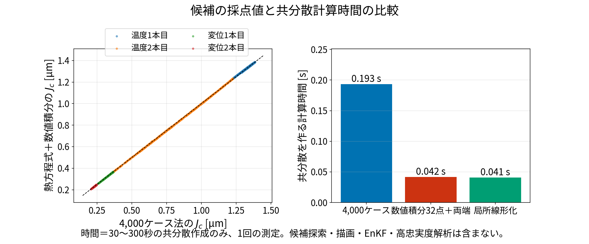
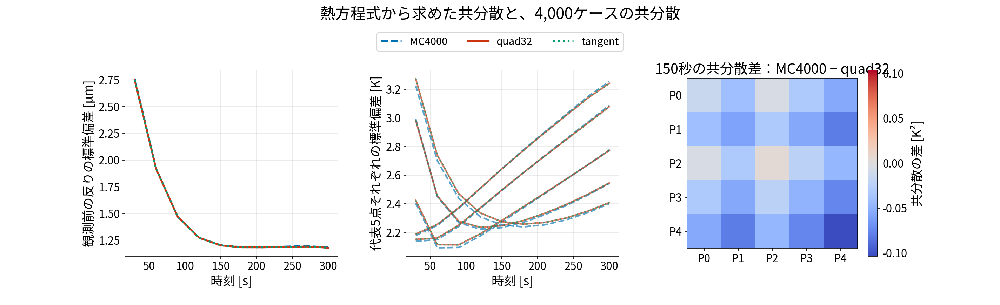
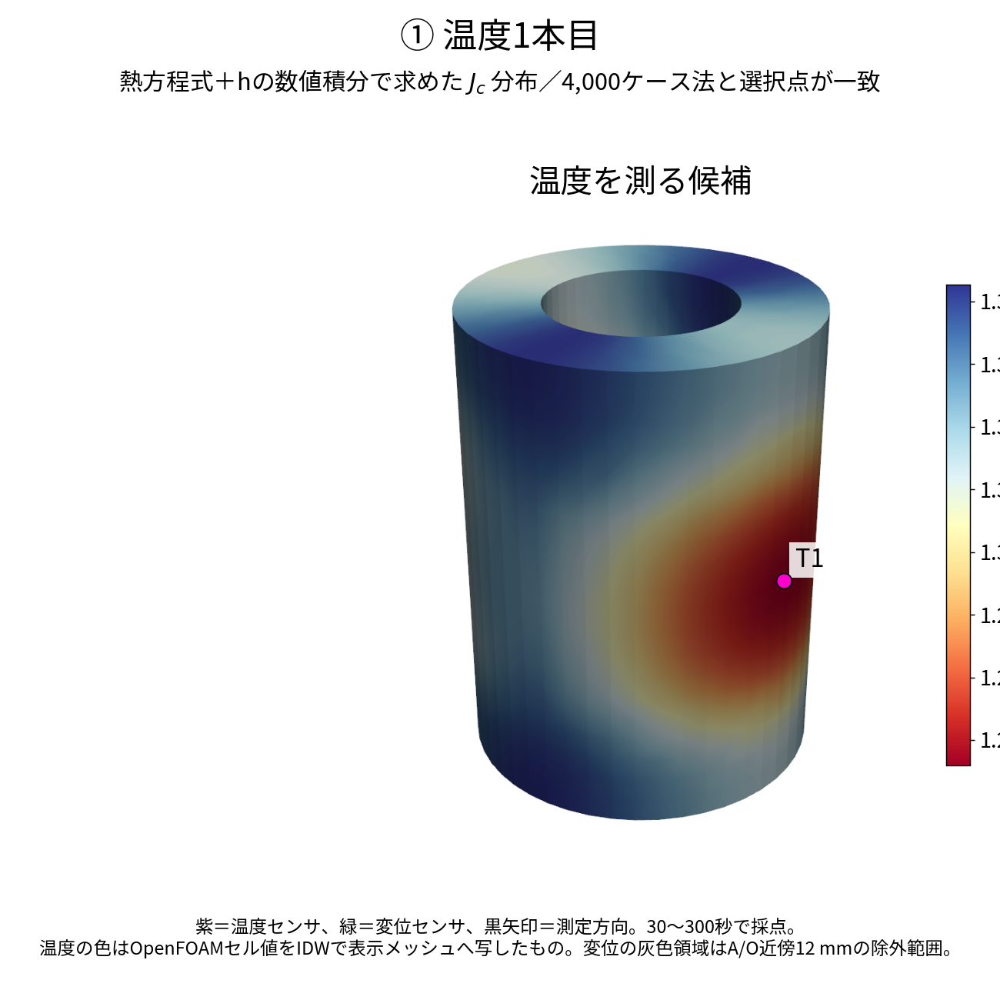
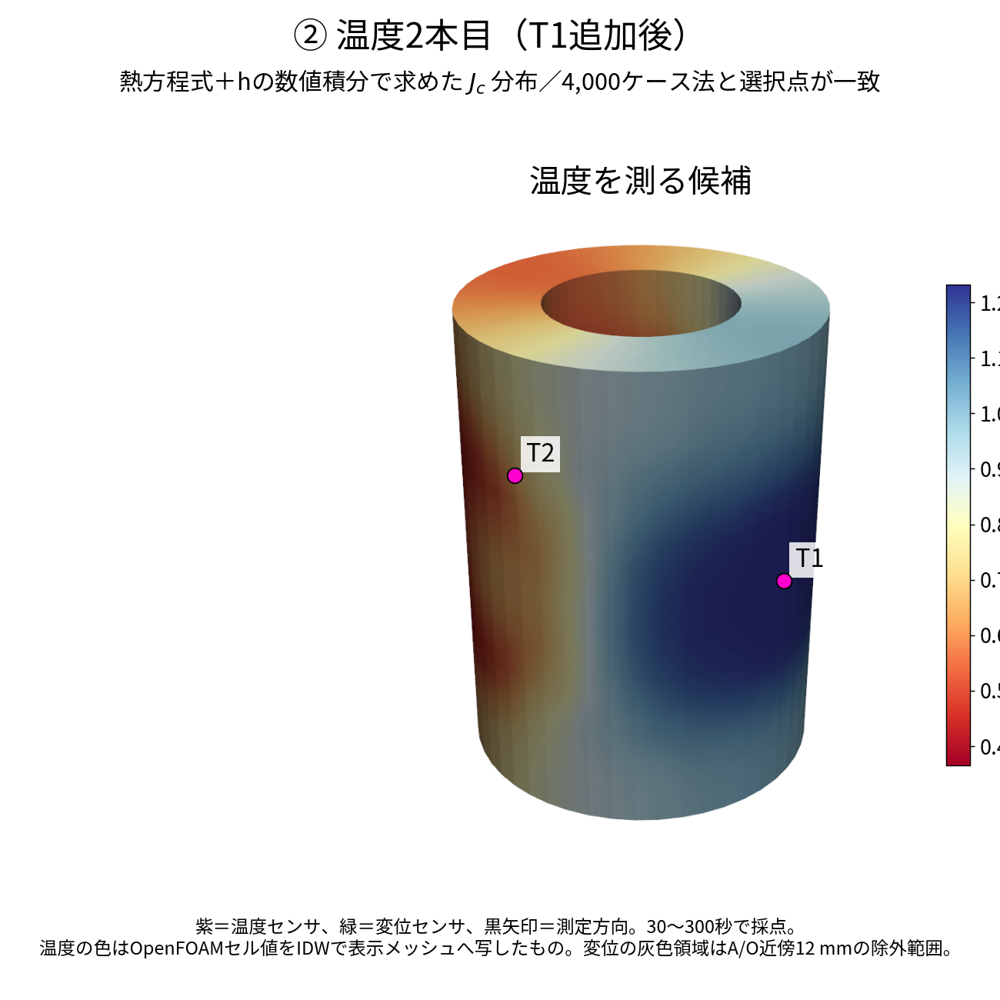
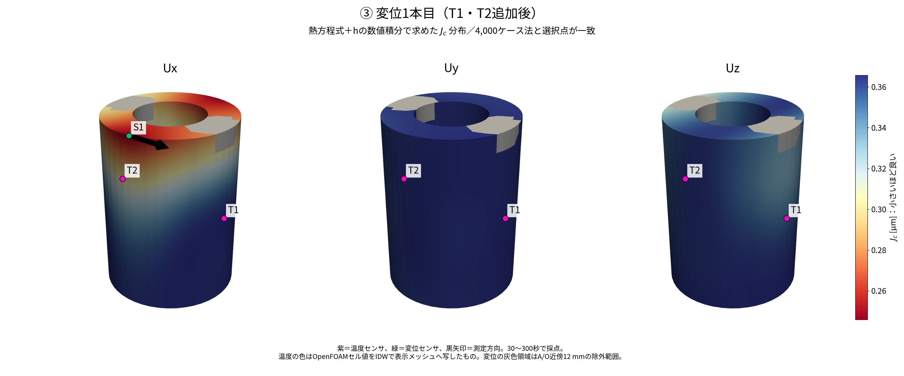
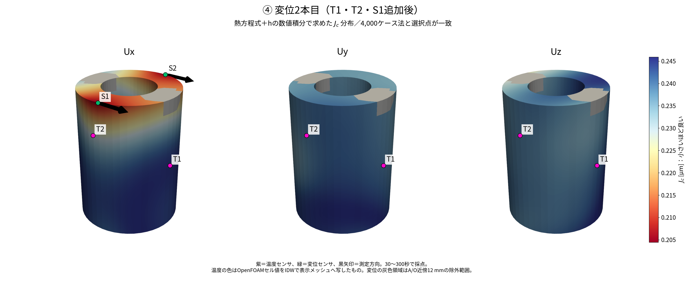
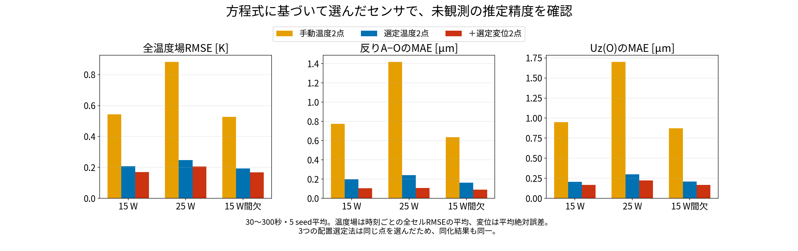
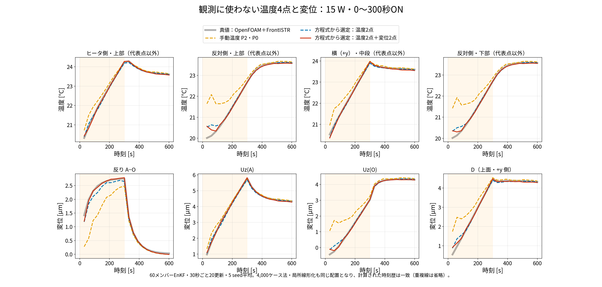
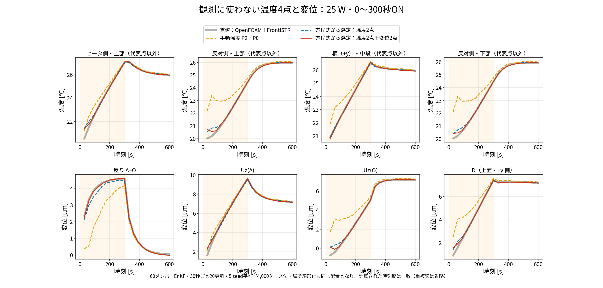
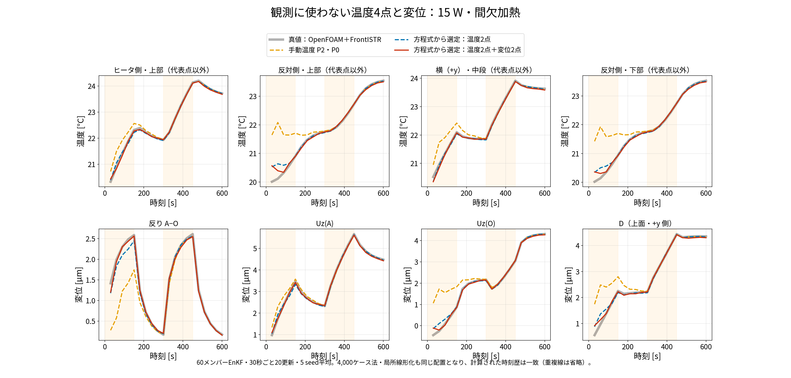

blog009 では、初期温度・発熱・放熱の条件を変えながら ROM を 4,000 本計算し、その結果のばらつきを使って、温度センサ2本、続いて変位センサ2本の場所を選びました。
ただ、センサを選ぶときに本当に必要なのは、4,000 本の計算結果そのものではありません。必要なのは「代表5点の温度が、どのくらい、どういう組み合わせでばらつくか」を表す 5×5 の表（共分散 \(B\) ）だけです（§2）。
そこで今回は、この \(B\) を、4,000 本の乱数計算ではなく、熱方程式から直接計算しました。
結果：選ばれた温度2本・変位2本は、4,000 本の方法とすべて同じ場所・同じ向きになりました。 同じ場所なので、そのセンサで EnKF を行った結果（測っていない場所の温度・変位）も、まったく同じになりました。
比べた方法は3つです。図や表では、右の列の短い名前で呼びます。
| 方法 | \(B\) の作り方 | 短い名前 | 選ばれた温度2本・変位2本 |
|---|---|---|---|
| 従来の方法 | ROM を乱数で 4,000 本計算し、ばらつきを集計 | MC4000 | blog009 の T1・T2、S1 の Ux・S2 の Ux |
| 今回の主な方法 | 放熱 \(h\) を固定すると式が一次式になることを使い、 \(h\) についてだけ32点で数値積分（§3・§4） | quad32 | 従来の方法と4本すべて同じ |
| 参考に比べた方法 | 平均の条件のまわりで式を微分し、ばらつきの広がりを追う（§5） | tangent | 従来の方法と4本すべて同じ |
何のための配置か：観測に使わない反り \(d=U_z(A)-U_z(O)\) をよく当てるための配置です。温度場全体や発熱量をよく当てる配置であることは、確かめていません。評価する点 A・O、ヒータの位置、センサ候補の範囲は blog009 と同じです。blog010 の、A・O を 90° 回した場合は、今回の方法ではまだ選び直していません。

左：同じ候補について、4,000 本の方法（横軸）と今回の方法（縦軸）の採点値 \(J_c\) を比べた図。破線の上に乗っていれば、2つの方法の採点が一致しています。図では点を間引いていますが、選ぶときは全候補を使っています。右：30〜300 秒の \(B\) を作るのにかかった時間。候補を選ぶ時間、描画、EnKF、OpenFOAM・FrontISTR の事前計算は含みません。
代表5点の温度を、縦に並べて1つのベクトルにします。
\[ \underbrace{\mathbf T_P(t)}_{5\times1}= \begin{bmatrix}T[P0]{}(t)\\T[P1]{}(t)\\T[P2]{}(t)\\T[P3]{}(t)\\T[P4]{}(t)\end{bmatrix}. \]
\(T[Pj]\) は、OpenFOAM の代表セル Pj の温度です。ここでは、まだ観測で直していない状態（測る前）の温度を考えます。
4,000 本の方法では、まず同じ時刻の温度を 4,000 本分そろえて平均をとり、各ケースが平均からどれだけずれているかを求めます。
\[ \overline{\mathbf T}_P(t)=\frac1{4000}\sum_{m=1}^{4000}\mathbf T_P^{(m)}(t), \qquad \delta\mathbf T_P^{(m)}=\mathbf T_P^{(m)}-\overline{\mathbf T}_P. \]
そのずれを掛け合わせて平均したものが、共分散 \(B\) です。
\[ \underbrace{B(t)}_{5\times5}= \frac1{3999}\sum_{m=1}^{4000} \underbrace{\delta\mathbf T_P^{(m)}}_{5\times1} \underbrace{(\delta\mathbf T_P^{(m)})^{\mathsf T}}_{1\times5}. \]
\(B\) の対角の要素は「各点の温度のばらつきの大きさ（分散）」、対角以外の要素は「2点の温度が一緒に上がりやすいか（共分散）」を表します。
センサ候補を採点するときに使うのは、この \(B(t)\) だけです。 4,000 本の温度の時刻歴を、候補ごとにデータ同化しているわけではありません。今回は、この \(B(t)\) を方程式から作ります。なお、選んだ後に実際に行う EnKF のメンバー数は、今まで通り 60 です。
方法だけを比べるため、何がどのくらい分からないかの前提は blog009 と同じにしました。
| 分からない値 | 与えたばらつき（blog009 と同じ） | 単位 |
|---|---|---|
| 初期温度（5点） | 各点ばらばらに、17〜32 ℃の範囲で一様 | ℃（差は K） |
| 発熱の倍率 \(q\) | 0.3〜1.8 の範囲で一様。発熱量は \(Q=15q\) | \(q\) は単位なし、 \(Q\) は W |
| 放熱 \(h\) | 平均 0.02、標準偏差 0.01 の正規分布。ただし 0.001 より小さい値は 0.001 に、0.1 より大きい値は 0.1 に置き換える | W/K |
ここからは、プログラム中の \(q_{\mathrm{scale}}\) を \(q\) 、 \(h_{\mathrm{ROM}}\) を \(h\) と短く書きます。この \(h\) は、5点の ROM 全体から外気へ逃げる熱の通りやすさ [W/K] です。表面熱伝達率 [W/(m² K)] とは別の量です。 5点の初期温度、 \(q\) 、 \(h\) は、互いに関係なくばらつくと仮定しています。
ばらつきの大きさ自体は、今回も人が決めた仮定です。熱方程式が教えてくれるのは、「最初に与えたばらつきが、時間とともにどう広がり、どう混ざるか」です。
代表点 i の熱の式は、これまでのプログラムと同じです。
\[ C_i\dot T[P_i] =\sum_{j\ne i}K_{ij}\big(T[P_j]-T[P_i]\big) -h\big(T[P_i]-T_{\mathrm{air}}\big) +15b_iq\,s(t). \]
外気からの温度上昇を \(\boldsymbol\theta=\mathbf T_P-T_{\mathrm{air}}\mathbf1\) とおきます。熱容量を対角に並べた行列 \(C\) と、点どうしの熱の行き来を表す行列 \(L\) を、
\[ \underbrace{C}_{5\times5}=\mathrm{diag}(C_0,\ldots,C_4), \qquad L_{ij}=K_{ij}\ (i\ne j),\quad L_{ii}=-\sum_{j\ne i}K_{ij} \]
とすると、5点まとめて次のように書けます。
\[ \underbrace{\dot{\boldsymbol\theta}}_{5\times1} =\underbrace{C^{-1}(L-hI)}_{A_h:\ 5\times5} \underbrace{\boldsymbol\theta}_{5\times1} +\underbrace{15C^{-1}\mathbf b}_{\mathbf b_q:\ 5\times1}q\,s(t). \]
この式の中で、分からない値どうしが掛け算になっているのは、 \(h\) と \(\boldsymbol\theta\) の積 \(h\boldsymbol\theta\) だけです。そこで \(h\) をある値に固定すると、温度は「初期温度」と「発熱の倍率 \(q\) 」の一次式になります。 一次式なら、ばらつきの計算は掛け算だけで済みます。これが今回の方法の出発点です。
分からない値のうち、初期温度上昇5つと発熱の倍率 \(q\) を、1つのベクトルにまとめます。
\[ \underbrace{\boldsymbol\xi}_{6\times1}= \begin{bmatrix} \theta[P0]{}(0)\\\theta[P1]{}(0)\\\theta[P2]{}(0)\\\theta[P3]{}(0)\\\theta[P4]{}(0)\\q \end{bmatrix}. \]
\(h\) を固定すると、時刻 t の温度上昇は、この6つの値に「効き方の表」 \(F_h(t)\) を掛けたものになります。
\[ \boxed{ \underbrace{\boldsymbol\theta(t)}_{5\times1} =\underbrace{F_h(t)}_{5\times6} \underbrace{\boldsymbol\xi}_{6\times1} } \]
表の中身は次の通りです。
\[ F_h= \begin{bmatrix} f_{00}&f_{01}&f_{02}&f_{03}&f_{04}&f_{0q}\\ f_{10}&f_{11}&f_{12}&f_{13}&f_{14}&f_{1q}\\ f_{20}&f_{21}&f_{22}&f_{23}&f_{24}&f_{2q}\\ f_{30}&f_{31}&f_{32}&f_{33}&f_{34}&f_{3q}\\ f_{40}&f_{41}&f_{42}&f_{43}&f_{44}&f_{4q} \end{bmatrix}. \]
たとえば P0 の温度は、6つの値にそれぞれの効き方を掛けて足したものです。
\[ \theta[P0]{}(t)= f_{00}\theta[P0]{}(0)+f_{01}\theta[P1]{}(0)+f_{02}\theta[P2]{}(0) +f_{03}\theta[P3]{}(0)+f_{04}\theta[P4]{}(0)+f_{0q}q. \]
式で解くと、表は次のようになります（左の5列が初期温度の効き方、右の1列が発熱の効き方）。
\[ F_h(t)=\begin{bmatrix} \underbrace{\exp(A_ht)}_{5\times5}& \underbrace{\int_0^t\exp(A_h(t-\tau))\mathbf b_qs(\tau)\,d\tau}_{5\times1} \end{bmatrix}. \]
実際のプログラムでは、この式を直接は計算していません。代わりに、これまでの ROM の計算（RK4）を7回まわして表を作りました。
乱数は使いません。決めた入力に対する応答を7本計算するだけです。この表を使って任意の初期温度・発熱の応答を組み立てた結果と、ROM でそのまま計算した結果の差は、150 秒で最大 ** \(2.27\times10^{-12}\) K** でした（計算の丸め誤差の大きさです）。
一様分布（ \(a\) から \(b\) の範囲で、どの値も同じ確率）の平均は \((a+b)/2\) 、分散は \((b-a)^2/12\) です。§2-1 の前提から、6つの値の平均と分散は次のようになります。
\[ \underbrace{\boldsymbol\mu_\xi}_{6\times1} =\begin{bmatrix}4.5\\4.5\\4.5\\4.5\\4.5\\1.05\end{bmatrix}, \qquad \underbrace{V_\xi}_{6\times6} =\mathrm{diag}\left( \frac{15^2}{12},\frac{15^2}{12},\frac{15^2}{12},\frac{15^2}{12},\frac{15^2}{12},\frac{1.5^2}{12} \right). \]
初期温度は 17〜32 ℃、つまり外気 20 ℃から −3〜+12 K なので、平均 4.5 K、分散 \(15^2/12\) K² です。発熱の倍率は 0.3〜1.8 なので、平均 1.05、分散 \(1.5^2/12\) です。6つは互いに関係なくばらつくので、 \(V_\xi\) の対角以外は 0 です。
\(h\) を固定したときの温度上昇の平均 \(\boldsymbol\mu_h\) とばらつき \(B_h\) は、
\[ \underbrace{\boldsymbol\mu_h}_{5\times1} =\underbrace{F_h}_{5\times6}\underbrace{\boldsymbol\mu_\xi}_{6\times1}, \qquad \boxed{ \underbrace{B_h}_{5\times5} =\underbrace{F_h}_{5\times6}\underbrace{V_\xi}_{6\times6} \underbrace{F_h^{\mathsf T}}_{6\times5} }. \]
理由：6つの値の平均からのずれを \(\delta\boldsymbol\xi=\boldsymbol\xi-\boldsymbol\mu_\xi\) とすると、温度のずれも同じ表を掛けたもの \(\delta\boldsymbol\theta=F_h\delta\boldsymbol\xi\) になります。これを掛け合わせて平均すると、
\[ \mathbb E[\delta\boldsymbol\theta\delta\boldsymbol\theta^{\mathsf T}\mid h] =F_h\mathbb E[\delta\boldsymbol\xi\delta\boldsymbol\xi^{\mathsf T}]F_h^{\mathsf T} =F_hV_\xi F_h^{\mathsf T}. \]
（ \(\mathbb E[\ \cdot\mid h]\) は「 \(h\) を固定したときの平均」という意味です。）
つまり、初期温度や発熱の倍率を何千通りも振らなくても、表 \(F_h\) と、入力のばらつき \(V_\xi\) の掛け算だけで、温度のばらつきが求まります。
残るのは \(h\) のばらつきです。 \(h\) が変わると式そのもの（ \(A_h\) ）が変わるので、§3 の掛け算だけでは扱えません。そこで、いろいろな \(h\) で §3 の計算を行い、 \(h\) の出やすさに応じて重みを付けて平均します。
まず、全体の平均温度上昇は、 \(h\) ごとの平均 \(\boldsymbol\mu_h\) を、 \(h\) の出やすさで平均したものです。
\[ \overline{\boldsymbol\theta}(t)=\mathbb E_h[\boldsymbol\mu_h(t)]. \]
次に、ある1ケースの温度が全体の平均からずれている量を、2つに分けます。
\[ \boldsymbol\theta-\overline{\boldsymbol\theta} =\underbrace{(\boldsymbol\theta-\boldsymbol\mu_h)}_{(1)} +\underbrace{(\boldsymbol\mu_h-\overline{\boldsymbol\theta})}_{(2)}. \]
このずれを掛け合わせて平均すると、(1) と (2) を掛けた項は消えます（同じ \(h\) の中で (1) を平均すると 0 になるため）。残るのは2つの項です。
\[ \boxed{ B(t)=\mathbb E_h[B_h(t)] +\mathbb E_h\left[ (\boldsymbol\mu_h-\overline{\boldsymbol\theta}) (\boldsymbol\mu_h-\overline{\boldsymbol\theta})^{\mathsf T} \right] }\qquad(5\times5). \]
温度上昇 \(\boldsymbol\theta\) と温度 \(\mathbf T_P\) は外気温（一定）だけ違うので、ばらつき \(B(t)\) はどちらで計算しても同じです。
積分は、 \(h\) をいくつかの決まった値 \(h_\ell\) にして §3 の計算を行い、それぞれに重み \(\omega_\ell\) を付けて足すことで行います。
\[ \overline{\boldsymbol\theta}\approx\sum_\ell\omega_\ell\boldsymbol\mu_{h_\ell}, \]
\[ B\approx\sum_\ell\omega_\ell B_{h_\ell} +\sum_\ell\omega_\ell (\boldsymbol\mu_{h_\ell}-\overline{\boldsymbol\theta}) (\boldsymbol\mu_{h_\ell}-\overline{\boldsymbol\theta})^{\mathsf T}. \]
\(h\) の値と重みの選び方には、Gauss–Legendre 求積を使いました。区間 \([0.001,\,0.1]\) の中に、計算精度が最も良くなるように決められた点と重みがあり、それを使うと少ない点数で正確に積分できます。
もう1つ注意があります。§2-1 の通り、blog009 のプログラム（
np.clip() ）は、0.001 より小さい \(h\) を 0.001 に、0.1 より大きい \(h\) を 0.1 に置き換えています。そのため、
\(h\) はちょうど 0.001 や 0.1
になる確率を持ちます。正規分布 \(Z\sim\mathcal
N(0.02,\,0.01^2)\) で計算すると、 \(h=0.001\) になる確率は約 2.9 %、 \(h=0.1\) になる確率は約 \(6\times10^{-16}\) （ほぼ
0）です。この両端も含めて、平均を次のように計算します。
\[ \mathbb E[f(h)] =\Pr(Z\le0.001)f(0.001) +\int_{0.001}^{0.1}f(h)p_Z(h)\,dh +\Pr(Z\ge0.1)f(0.1). \]
（ \(f(h)\) は、 \(h\) を決めると決まる量（ここでは \(\boldsymbol\mu_h\) や \(B_h\) ）、 \(p_Z\) は正規分布の確率密度です。）
範囲の外の確率を捨てて、範囲の中だけで確率を合計 1 になるように直す、という扱いはしていません。blog009 の乱数の作り方と同じ分布にそろえています。
| 区間の中の点の数 | 重みの合計（確率の合計。1 になるべき） | 64点で計算した \(B\) との差 | 判断 |
|---|---|---|---|
| 8 | 1.002893 | 約13％ | 確率の合計が 1 からずれるので使わない |
| 16 | 1.0000000059 | \(6.71\times10^{-9}\) | ほぼ十分 |
| 32 | 1.0000000000 | \(1.96\times10^{-13}\) | 今回の比較に使用 |
| 64 | 1.0000000000 | 基準 | 確認用 |
差は、10時刻すべての \(B\) の要素について、差の二乗和の平方根を、64点の \(B\) の大きさで割った値です。8点の結果はセンサ選びには使っていません。
32点法では、区間の中の32点と両端2点の計34通りの \(h\) について、それぞれ §3-1 の7本の計算を行います。合計 238本 の ROM 計算で、乱数は使いません（4,000 本の方法は 4,000 本）。なお、64点との一致は「 \(h\) についての積分が十分正確か」を確かめたもので、ROM の物理的な正しさや、RK4 の時間刻みによる誤差を確かめたものではありません。
もう1つ、もっと簡単な方法も試しました。平均の条件（初期温度上昇 4.5 K、 \(q=1.05\) 、平均の \(h\) ）の計算を1本だけ行い、そのまわりで「入力が少し変わると温度がどれだけ変わるか（感度）」を求め、感度とばらつきから \(B\) を作る方法です。
今度は \(h\) も含めた7つの値を、分からない値としてまとめます。
\(\boldsymbol\chi=[\boldsymbol\theta(0)^{\mathsf T},q,h]^{\mathsf T}\) （7×1）、そのばらつきを \(V_\chi\) （7×7）とします。 \(h\) の平均と分散には、§4-1 の両端を含めた分布の値を使います。
感度は、7つの値で温度を微分したものです。
\[ \underbrace{S(t)}_{5\times7} =\frac{\partial\boldsymbol\theta(t)}{\partial\boldsymbol\chi^{\mathsf T}} =\begin{bmatrix}S_0&S_q&S_h\end{bmatrix}, \quad S_0:5\times5,\quad S_q,S_h:5\times1. \]
平均の \(h\) を \(\bar h\) 、 \(A_{\bar h}=C^{-1}(L-\bar hI)\) とすると、感度は熱の式を微分した次の式で、温度と一緒に時間を進めて求まります。
\[ \dot S_0=A_{\bar h}S_0,\qquad S_0(0)=I, \]
\[ \dot S_q=A_{\bar h}S_q+\mathbf b_qs(t),\qquad S_q(0)=0, \]
\[ \dot S_h=A_{\bar h}S_h-C^{-1}\boldsymbol\theta(t),\qquad S_h(0)=0. \]
最後の式の \(-C^{-1}\boldsymbol\theta\) は、放熱の項 \(-hC^{-1}\boldsymbol\theta\) を \(h\) で微分したときに出てくる項です（積の微分）。
\[ \frac{\partial}{\partial h}[-hC^{-1}\boldsymbol\theta] =-C^{-1}\boldsymbol\theta-hC^{-1}S_h. \]
温度5個と感度35個（5×7）を、同じ RK4 で一緒に進めます。 \(B\) は、感度とばらつきの掛け算です。
\[ \boxed{B_{\mathrm{tangent}}(t)\approx \underbrace{S(t)}_{5\times7} \underbrace{V_\chi}_{7\times7} \underbrace{S(t)^{\mathsf T}}_{7\times5}}. \]
今回の条件では、この簡単な方法でも、32点法とほぼ同じ \(B\) になりました（差は約 0.0150％）。ただしこれは、平均の条件のまわりでまっすぐ（一次式）だと近似した方法です。 \(h\) のばらつきがもっと大きい場合や、物性が温度で変わる場合、放射を含む場合には、ずれが大きくなる可能性があります。
発熱量 \(Q\) に対する感度は、 \(Q=15q\) なので \(\partial\mathbf T/\partial Q=S_q/15\) です。今回はこれらの感度を \(B\) を作るためだけに使いました。発熱量や放熱を当てるためのセンサ配置は、比べていません。

測る前の反りと、代表5点の温度のばらつき（標準偏差）を3つの方法で比べた図。右は 150 秒での「4,000 本の方法の B − 32点法の B」。10時刻全体での差は約 1.01 ％。4,000 本の方法は乱数の本数が有限なので、このくらいのぶれを含みます。
代表5点の温度のずれを \(\delta\mathbf T_P\) （5×1）とすると、候補 c のセンサの値のずれと、反りのずれは、どちらも5点の温度に重みを掛けて足したものになります。
\[ \delta y_c= \underbrace{\begin{bmatrix}h_{c,0}&h_{c,1}&h_{c,2}&h_{c,3}&h_{c,4}\end{bmatrix}}_{\mathbf h_c^{\mathsf T}:\ 1\times5} \underbrace{\delta\mathbf T_P}_{5\times1}, \qquad \delta d=\underbrace{\mathbf w^{\mathsf T}}_{1\times5}\delta\mathbf T_P. \]
\(h_{c,j}\) は「Pj の温度が 1 K 違うと、候補 c のセンサの値がいくら違うか」という決まった重みです。記号が似ていますが、放熱の \(h\) とは別のものです。
重みは、これまでに作った POD、IDW、FrontISTR の結果から求めます。まず温度の重みです。
\[ \underbrace{G}_{20696\times5} =\underbrace{\Phi}_{20696\times5} \underbrace{(\Phi_P)^+}_{5\times5}, \qquad \Phi_P=\Phi[P,:]. \]
（ \(\Phi\) は POD の温度の型を並べた行列、 \(\Phi[P,:]\) はそのうち代表5セルの行だけを取り出したもの、 \((\cdot)^+\) は逆行列です（5×5 の行列なので、ふつうの逆行列と同じです）。）
温度センサの候補セル c の重みは、 \(G\) の c 行目です。変位の重みは、
\[ \underbrace{H_u}_{15120\times5} =\underbrace{D}_{15120\times5}(\Phi_P)^+, \qquad D=\underbrace{W}_{15120\times5040} \underbrace{M}_{5040\times20696}\Phi. \]
反りの重み \(\mathbf w\) は、点 A の \(U_z\) の重みから点 O の \(U_z\) の重みを引いたものです。
\[ \mathbf w^{\mathsf T}=[H_u]_{A,z,:}-[H_u]_{O,z,:}. \]
今の時点で残っている、5点の温度の分からなさを \(P(t)\) （5×5）とします。まだ何も測っていなければ \(P=B\) です。
候補 c を測ると、測定値と予測値の差（予測のはずれ）が分かります。反りの予測を「予測のはずれ × 係数 \(a\) 」だけ直すとします。候補の測定ノイズの分散を \(r_c\) とすると、直した後の反りの分散は、
\[ V_d-2aC_{dy}+a^2V_y, \]
\[ V_d=\mathbf w^{\mathsf T}P\mathbf w, \qquad C_{dy}=\mathbf w^{\mathsf T}P\mathbf h_c, \qquad V_y=\mathbf h_c^{\mathsf T}P\mathbf h_c+r_c. \]
\(a\) について平方完成すると、
\[ V_y\left(a-\frac{C_{dy}}{V_y}\right)^2+V_d-\frac{C_{dy}^2}{V_y}. \]
一番小さくなるのは \(a=C_{dy}/V_y\) のときです。そのとき、候補 c を測ることで減る反りの分散は、
\[ \boxed{\Delta V_c(t)= \frac{(\mathbf w^{\mathsf T}P(t)\mathbf h_c)^2} {\mathbf h_c^{\mathsf T}P(t)\mathbf h_c+r_c}}. \]
反りと一緒に動く量（分子）が大きく、ノイズ（分母の \(r_c\) ）に埋もれないセンサほど、反りの分からなさを大きく減らします。この式は「測定値の一次式で直す」範囲で一番良い直し方を求めたもので、温度のばらつきが正規分布でなくても使えます。
候補の点数 \(J_c\) は、10時刻それぞれで「直した後に残る反りの標準偏差」を求め、それを平均したものです。
\[ \boxed{J_c=\frac1{10}\sum_{k=1}^{10} \sqrt{\mathbf w^{\mathsf T}P(t_k)\mathbf w-\Delta V_c(t_k)}}. \]
\(t_k=30,60,\ldots,300\) 秒、ノイズは \(r_c=0.3^2\) （温度は K²、変位は µm²）です。** \(J_c\) が小さい候補ほど良い候補です。**
1本選んだら、その分だけ分からなさを減らした \(P\) に更新します。
\[ \underbrace{P_{+c}}_{5\times5}=P- \frac{\underbrace{P\mathbf h_c}_{5\times1} \underbrace{\mathbf h_c^{\mathsf T}P}_{1\times5}} {\mathbf h_c^{\mathsf T}P\mathbf h_c+r_c}. \]
更新した \(P\) で、残りの候補をもう一度採点し、次の1本を選びます。今回は、温度センサ2本を先に選び、その2本を付けた状態で変位センサ2本を選びました。
なお、この採点は「各時刻で、測る前の状態から1回だけ直したら」という計算です。実際の EnKF のように 30 秒ごとに直しを積み重ねる効果は入っていません。積み重ねた効果は、§8 の EnKF で確かめます。
\(W\) は「どこが温まると、対象がどう変位するか」を表します。今回の採点では、それに加えて「温度がどのくらい分からないか（ \(P\) ）」と「測定ノイズ（ \(r_c\) ）」も使います。
選ばれるのは、まだ分かっていない温度の組み合わせを測れて、その情報が反りを直すのに役立つ候補です。 \(W\) が大きい場所や、温度がよく動く場所を、それだけで順位付けしているわけではありません。
今回変えたのは \(B\) の作り方だけです。 \(W\) 、温度の重み、採点の式は、blog009 と同じです。
温度センサの候補は、代表5セルを除く 20,691 セル、変位センサの候補は、A・O から 12 mm 以内を除く 4,918 節点 × 3方向 ＝ 14,754 です。A はヒータ側、O は反対側の上面の点で、節点の座標は A=(28.75, 0, 100.5) mm、O=(−28.75, 0, 100.5) mm です。




斜めから見た図。Jc が小さいほど良い候補。変位は Ux・Uy・Uz のすべてを採点し、3方向で同じ色の範囲を使っています。色の範囲は、1本目・2本目などの段階ごとに違います。
| 順番 | 選んだセンサ | およその座標 [mm] | 4,000 本の方法の J [µm] | 32点法の J [µm] |
|---|---|---|---|---|
| 1 | 温度 T1：ヒータ側・中段 | (36.7, 0.8, 49.2) | 1.225906 | 1.231774 |
| 2 | 温度 T2：反対側・中段 | (−35.9, −1.5, 51.6) | 0.365559 | 0.365736 |
| 3 | 変位 S1：上面、Ux | (4.9, −37.2, 100.5) | 0.245882 | 0.245913 |
| 4 | 変位 S2：上面、Ux | (4.9, 37.2, 100.5) | 0.204461 | 0.204454 |
J は、その行までに選んだセンサをすべて付けたときの値です（例：3行目は T1・T2・S1 を付けたとき）。J は測る前に計算した「残る反りの標準偏差の見込み」で、§8 の実際の EnKF の誤差とは別の量です。
4,000 本の方法と32点法では J の値がわずかに違いますが、一番良い候補の場所は4本とも変わりませんでした。 ただし、これは今回の前提・候補の範囲・目的（反り）での結果です。また、1本ずつ選ぶ方法なので、4本の組み合わせとして一番良いことまでは示していません。
選んだ4本で EnKF を実行しました。真値には、これまでの OpenFOAM の温度場と FrontISTR の全節点の変位を使っています。実機での検証はまだです。
MC4000、quad32、tangent で選んだ配置それぞれで、同じ EnKF・同じ乱数の種を使って計算し直しました。選ばれた場所が同じなので、3つの EnKF の結果は数値として完全に同じでした。 図では重なる線を1本にまとめています。

| 加熱条件 | 測ったセンサ | 温度場全体 [K] | 反り A−O [µm] | Uz(A) [µm] | Uz(O) [µm] |
|---|---|---|---|---|---|
| 15 W | 手で決めた温度 P2・P0 | 0.543 | 0.775 | 0.241 | 0.951 |
| 15 W | 選んだ温度 T1・T2 | 0.208 | 0.198 | 0.200 | 0.204 |
| 15 W | T1・T2 ＋ 変位 S1・S2（Ux） | 0.169 | 0.103 | 0.140 | 0.168 |
| 25 W | 手で決めた温度 P2・P0 | 0.882 | 1.417 | 0.311 | 1.699 |
| 25 W | 選んだ温度 T1・T2 | 0.247 | 0.242 | 0.226 | 0.298 |
| 25 W | T1・T2 ＋ 変位 S1・S2（Ux） | 0.206 | 0.107 | 0.180 | 0.221 |
| 15 W 間欠 | 手で決めた温度 P2・P0 | 0.528 | 0.635 | 0.276 | 0.874 |
| 15 W 間欠 | 選んだ温度 T1・T2 | 0.194 | 0.161 | 0.170 | 0.210 |
| 15 W 間欠 | T1・T2 ＋ 変位 S1・S2（Ux） | 0.167 | 0.090 | 0.139 | 0.166 |
表の値はどれも、測っていない量の誤差です。温度場全体は、30〜300 秒の10時刻それぞれで全 20,696 セルの誤差の二乗平均平方根（RMSE）を求め、時間で平均し、さらに5通りの乱数の種で平均した値です。変位は、同じ10時刻の誤差の絶対値を平均し、5通りで平均した値です。
\[ E_T=\frac15\sum_{s=1}^{5}\frac1{10}\sum_{k=1}^{10} \sqrt{\frac1{20696}\sum_{i=1}^{20696} \big(\widehat T_i^{(s)}(t_k)-T_i^*(t_k)\big)^2}, \]
\[ E_d=\frac15\sum_{s=1}^{5}\frac1{10}\sum_{k=1}^{10} \left|\widehat d^{(s)}(t_k)-d^*(t_k)\right|. \]
\(T_i^{\ast}\) 、 \(d^{\ast}\) は真値、 \(\widehat T_i\) 、 \(\widehat d\) は EnKF の60メンバーの平均（推定値）です。乱数の種ごとに誤差を求めてから平均しています（5通りの推定値を先に平均してから誤差をとる、という順番ではありません）。



上の段：代表点でも測定点でもない4セルの温度。下の段：測っていない反り A−O、Uz(A)、Uz(O)、上面 +y 側の点 D の Uz。D はおよそ (0, 36.2, 100.5) mm で、S1・S2 とは場所も向き（S1・S2 は Ux、D は Uz）も違います。黒＝真値、橙＝手で決めた温度2本、青＝選んだ温度2本、赤＝さらに選んだ変位2本を足した結果。橙色の背景は加熱中。線は5通りの乱数の種の平均で、1回目に直す 30 秒以降を表示。
温度を比べた4点のおよその位置は、ヒータ側上部 (35.1, −0.8, 94.6)、反対側上部 (−37.5, 0, 90)、+y 側中段 (0, 35.5, 50)、反対側下部 (−32.9, −1.6, 29.7) mm です。それぞれ一番近い OpenFOAM のセルで比べています。
15 W で温度＋変位の4本を使うと、この4点の誤差の平均（絶対値）は 0.146、0.206、0.095、0.149 K でした。データ同化をしないと 4.610、4.493、4.560、4.466 K です。代表点でも測定点でもない場所の温度も、真値に近づいています。ただし、変位を足した配置が、4点すべてで一番誤差が小さいとは限りません。
| 方法 | \(B\) を作る時間 [s] | 4本を選ぶ時間 [s] |
|---|---|---|
| 4,000 本の方法（MC4000） | 0.193 | 0.086 |
| 32点＋両端の数値積分（quad32） | 0.042 | 0.088 |
| 平均のまわりで微分（tangent） | 0.041 | 0.094 |
\(B\) を作る時間は、約 4.6 倍速くなりました。ただし、どれも5点の小さな ROM なので、もともと短い時間です。1回だけ測った値で、ファイルの読み書きや描画は含みません。OpenFOAM や FrontISTR のような大きな解析で何倍速くなるかを示す値ではありません。選んだ後の EnKF は、8通りの配置 × 5通りの乱数の種を、各加熱条件で実行し、1条件あたり約 4.7〜4.9 秒（評価の図を作る時間を含む）でした。
確かめたこと：
今回言えること：blog009 の前提では、温度のばらつき \(B\) を熱方程式から作っても、4,000 本の方法と同じ温度・変位センサの配置が選ばれました。その配置で、測っていない温度・変位を当てる精度も同じでした。
まだ確かめていないこと：ばらつきの前提を変えた場合、A・O を回した場合、熱の式が一次式にならない場合（物性が温度で変わるなど）、ROM を作った範囲を大きく外れる放熱の場合にも、同じ配置・同じ精度になるか。今回の結果だけで「どんな問題にも最適」「発熱量や放熱を当てるのにも最適」とは言えません。
いつでも使えるわけではありません。 この方法が 4,000 本の乱数計算の代わりになったのは、今回の問題が次の条件をすべて満たしていたからです。1つでも外れると、そのままでは使えないか、近似になります。
| 条件 | 今回の問題では | 外れる例 | |
|---|---|---|---|
| ① | 分からない値のほとんどが、温度に一次式で効く（何倍にすると温度の変化も何倍になる） | 初期温度5つと発熱の倍率 \(q\) は、 \(h\) を固定すれば一次式で効く（§3） | 物性（熱伝導率・比熱）が温度で変わる、放射がある、発熱が温度で変わる |
| ② | 一次式で効かない値は、1〜2個だけ | 一次式でないのは放熱 \(h\) の1個だけ。34通りの \(h\) で計算すれば済んだ（§4） | 面ごとに違う熱伝達率が5個分からない：1個 34 通りなら \(34^5\) ＝約 4,500 万通りになり、4,000 本より重くなる |
| ③ | 分からない値の、ばらつきの大きさ（平均と分散）と、一次式でない値の分布が分かっている | 初期温度・ \(q\) は一様、 \(h\) は端で置き換えた正規分布、と決めてある（§2-1） | ばらつきを決められない（決めないと、4,000 本の方法も使えない） |
| ④ | 加熱の時間の決まり方（いつ ON・OFF か）、外気温、熱源の場所は分かっている | 0〜300 秒 ON、外気 20 ℃、ヒータ位置は既知。分からないのは発熱の大きさだけ | 運転パターンそのものが分からない、熱源の場所が分からない、外気温が変わる |
| ⑤ | センサの値と反りが、温度の一次式で書ける | 温度は POD の型の重ね合わせ、変位は線形の熱弾性（小さい変形、物性一定、拘束が変わらない）（§6-1） | 接触・すべり・ボルトのゆるみ、大きな変形、温度で変わるヤング率 |
| ⑥ | センサ選びの基準が「ばらつきの大きさ（分散）」だけで決まる | 採点 \(J_c\) は \(B\) （分散と共分散）だけで計算できる（§6-2） | 「外れ値の確率」や「最悪の場合」で選びたい（分布の形まで要る） |
②について補足します。計算の本数は、ざっくり「（一次式で効く値の数＋2）×（一次式でない値1つあたりの点の数）^（一次式でない値の数）」です。今回は（5＋2）×34¹ ＝238 本でした。一次式でない値が増えると、本数は掛け算で増えます。
tangent（平均のまわりで微分する方法、§5）について：①が外れても、②の値が増えても、本数は「分からない値の数」に比例して増えるだけなので使えます。ただし、「ばらつきが小さく、平均のまわりで温度がほぼまっすぐ変わる」ときだけ正確です。今回は32点法との差が 0.015 % でしたが、 \(h\) のばらつきがもっと大きい、あるいは物性が温度で強く変わる場合は、ずれが大きくなる可能性があります（確かめていません）。
条件が外れたときは：4,000 本のような乱数の方法（モンテカルロ）は、上の①②⑤が外れても使えます（式が一次式でなくても、ROM を回せば良いので）。この方法は「条件がそろっているときに、乱数を使わずに同じ答えを速く・ぶれなく出す方法」であり、乱数の方法を置き換えるものではありません。また、⑤が外れる場合は、 \(B\) の作り方だけでなく、採点の式（§6-2）そのものも成り立たなくなります。
| 数式・処理 | プログラム |
|---|---|
| \(h\) を固定した ROM、7本の応答の RK4 計算 | dacore/rom_general.py の
integrate_ensemble() |
| \(h\) の積分点・重み、両端の確率 | run/analytic_covariance_sensor_study.py の
h_quadrature() |
| \(F_hV_\xi F_h^{\mathsf T}\) 、全体の \(B\) の組み立て | 同じファイルの conditional_covariance() |
| 平均の温度と感度 \(S\) を一緒に進める RK4 | 同じファイルの tangent_covariance() |
| 候補の重み \(G\) 、 \(H_u\) 、反りの重み \(\mathbf w\) | 同じファイルの operators() |
| 温度2本 → 変位2本を1本ずつ選ぶ | 同じファイルの select() |
| \(J_c\) と、1本選んだ後の \(P\) の更新 | 既存の run/select_nonrep_temp_disp.py の
score()、add_row() |
| 同じ条件での EnKF と、測っていない量の評価 | 既存の run/selected_pair_unobserved_check.py
を新しいスクリプトから呼び出し |
| \(J_c\) の分布・誤差・時刻歴の図 | run/make_blog011_figures.py |
結果は
sample/106_0_pod_selected_rom/results/blog011/
に保存しました。blog009・010 の結果は上書きしていません。
study.json：選んだセンサ、 \(B\)
の差、積分の収束、確かめた値、計算時間。covariances.npz：10時刻の、各方法の \(B\) 。selection_*.json、scores_*.npz：選んだ点と、全候補の
\(J_c\) 。unobserved_check_analytic_*.json：各加熱条件の誤差。unobserved_traj_analytic_*.npz：測っていない温度・変位の時刻歴。vtk/analytic_sensor_scores.vtu：ParaView で見る \(J_c\) の分布。温度は表示用メッシュへ IDW
で移した値、変位は FEM の節点の値。再現コマンド（106 フォルダの中で実行）：
OPENBLAS_NUM_THREADS=4 OMP_NUM_THREADS=4 python run/analytic_covariance_sensor_study.py
OPENBLAS_NUM_THREADS=4 OMP_NUM_THREADS=4 python run/make_blog011_figures.py
python run/build_local_site.pyこれまでに計算した OpenFOAM・FrontISTR の真値、校正済みの ROM、POD と変位の応答が必要です。今回はそれらをそのまま使い、 \(B\) の計算、センサ選び、ROM＋EnKF を新しく実行しました。